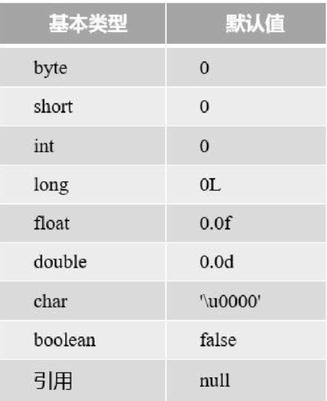
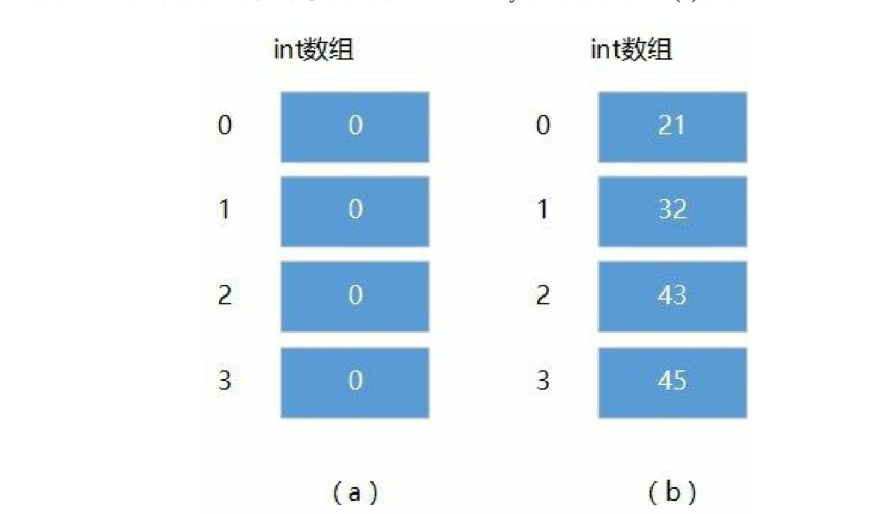
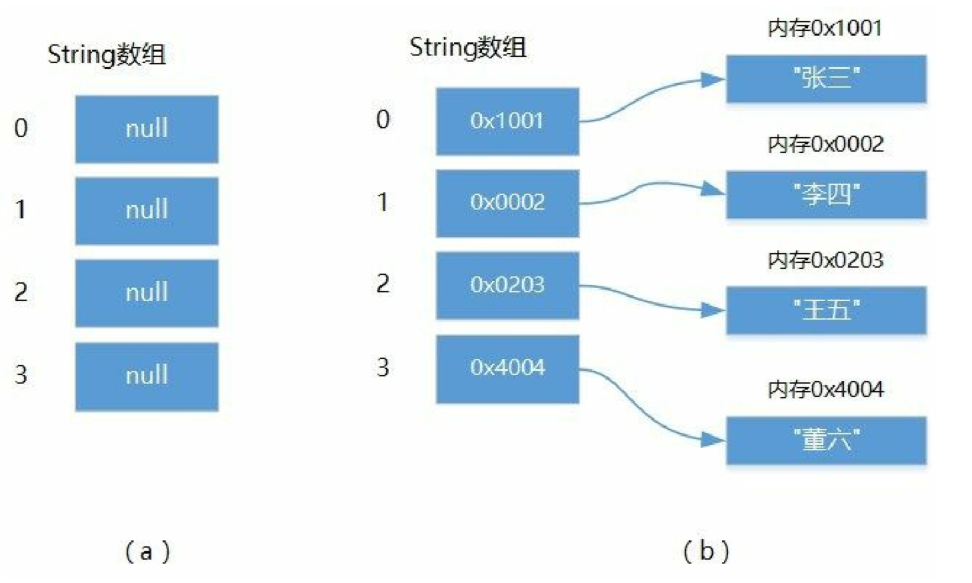

4.1. 一维数组的创建和使用¶
4.1.1. 一维数组¶
当数组中每个元素都只带有一个下标时，这种数组就是“一维数组”。数组是引用数据类型，引用数据类型在使用之前一定要做两件事情：声明和初始化。
01.数组声明¶
元素数据类型[] 数组变量名;
元素数据类型 数组变量名[];
eg
public class Demo {
public static void main(String[] args) {
// 定义三种array初始化方法
int a[]=new int[3];
a[0]=1;
a[1]=2;
a[2]=3;
int b[]= new int[] {4,5,6,7};
int c[]= {8,9,7,6};
System.out.println(a[1]);
System.out.println(b[1]);
System.out.println(c[1]);
System.out.println("a数组的长度为："+a.length);
System.out.println("b数组的长度为："+b.length);
System.out.println("c数组的长度为："+c.length);
}
}
# 数组的长度限制既可以是整数也可以是一个公式，
例如
int a[]=new int[2+3];
- 小实验
public class array_test1 {
public static void main(String[] args) {
//定义数组，并进行初始化值，12个月的天数
int month[] = new int[] {31,28,31,30,31,30,31,31,30,31,31};
// 遍历数组进行值的输出
for (int i = 0; i < month.length; i++) {
System.out.println(i+1+"月有"+month[i]+"天");
}
}
}
//输出结果
1月有31天
2月有28天
3月有31天
4月有30天
5月有31天
6月有30天
7月有31天
8月有31天
9月有30天
10月有31天
11月有31天
02.数组初始化¶
静态初始化
静态初始化就是将数组的元素放到大括号中，元素之间用逗号（,）分隔。
示例代码：
package aom; public class HelloWorld { public static void main(String[] args) { // 声明数组 int intArray[] = {11, 22, 33, 44, 55, 66}; // 初始化数组 String StrArray[] = {"胡1", "胡2", "胡3"}; // 遍历int数组 for (int i = 0; i < intArray.length; i++) { System.out.println(intArray[i]); } // 遍历String数组 for (int i = 0; i < StrArray.length; i++) { System.out.println(StrArray[i]); } } } /* * 11 22 33 44 55 66 胡1 胡2 胡3 * */
动态初始化
使用new运算符分配指定长度的内存空间
语法如下：
new 元素数据类型[数组长度] ;
示例代码:
package bom;
public class HelloWorld {
public static void main(String[] args) {
// 定义三种array初始化方法
int a[] = new int[3];
a[0] = 1;
a[1] = 2;
a[2] = 3;
int b[] = new int[]{4, 5, 6, 7};
int c[] = {8, 9, 10, 11, 12};
System.out.println(a[1]);
System.out.println(b[1]);
System.out.println(c[1]);
System.out.println("数组a的长度为：" + a.length);
System.out.println("数组b的长度为：" + b.length);
System.out.println("数组c的长度为：" + c.length);
}
}
/*
*
2
5
9
数组a的长度为：3
数组b的长度为：4
数组c的长度为：5
* */
提示 new分配数组内存空间后，数组中的元素内容是什么呢？答案是数组类型的默认值，不同类型默认值是不同的。
数据类型默认值¶

intArray数组
intArray数组内容如图(a)所示，intArray数组中的所有元素都是0，根据需要会动态添加元素内容，数组初始化完成，intArray数组内容如图(b)所示。

stringArray数组
当代码第③行执行完成，stringArray数组内容如图(a)所示，stringArray数组中所有元素都是null，随着每一个元素被初始化和赋值，代码第④行执行完之后每个元素都有不同内容，这里需要注意的是引用类型数组，每一个元素保存都是指向实际对象的内存地址，如图(b)所示，每个对象还需要创建和初始化过程，有关对象创建和初始化内容。

案例：数组合并¶
数组长度是不可变，要想合并两个不同的数组，不能通过在一个数组的基础上追加另一个数组实现。
需要创建一个新的数组，新数组长度是两个数组长度之和。然后再将两个数组的内容导入到新数组中。
package com.company;
public class Main {
public static void main(String[] args) {
// 两个待合并数组
int array1[] = {20, 10, 50, 40, 30};
int array2[] = {1, 2, 3};
// 动态初始化数组，设置数组的长度是array1和array2长度之和
int array[] = new int[array1.length + array2.length];
// 循环添加数组内容
for (int i = 0; i < array.length; i++) {
if (i < array1.length) {
array[i] = array1[i];
} else {
array[i] = array2[i - array1.length];
}
}
System.out.println("合并后:");
for (int element : array) {
System.out.printf("%d ", element);
}
}
}
/*
合并后:
20 10 50 40 30 1 2 3 */